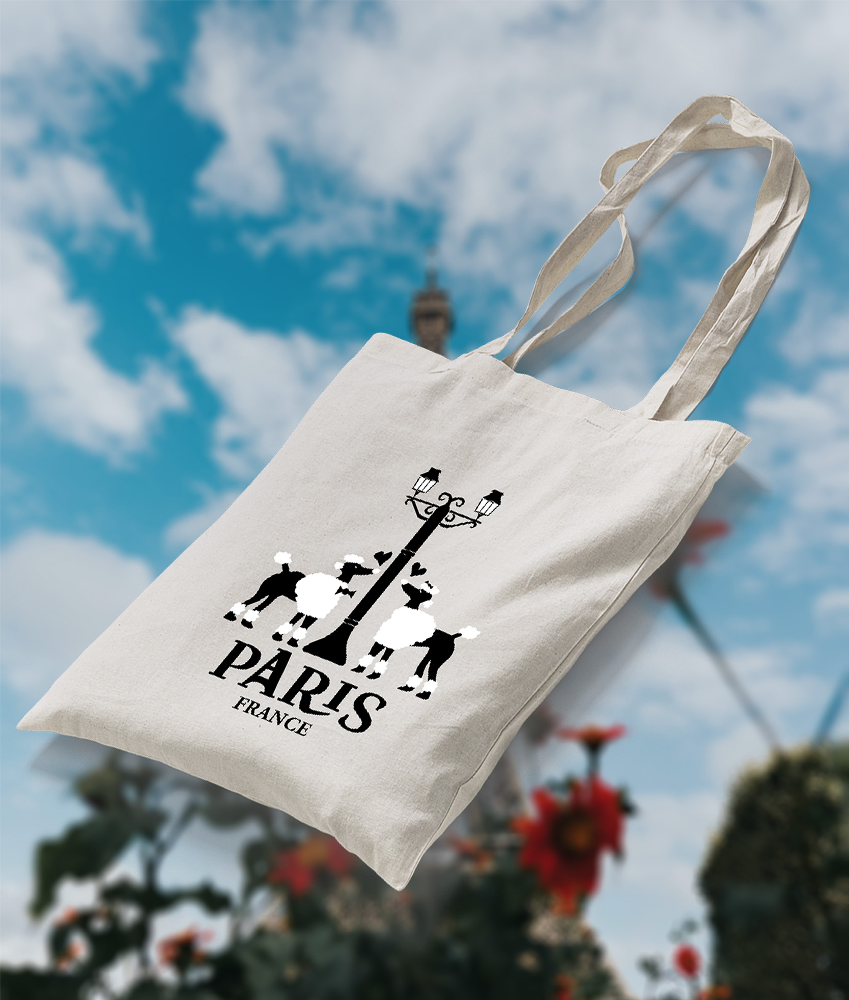
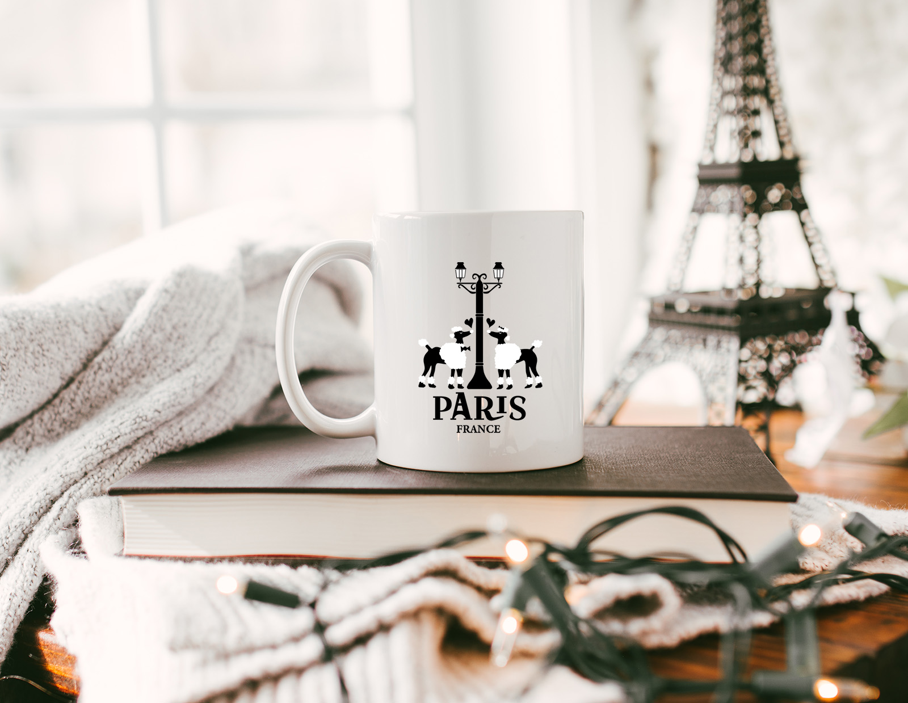
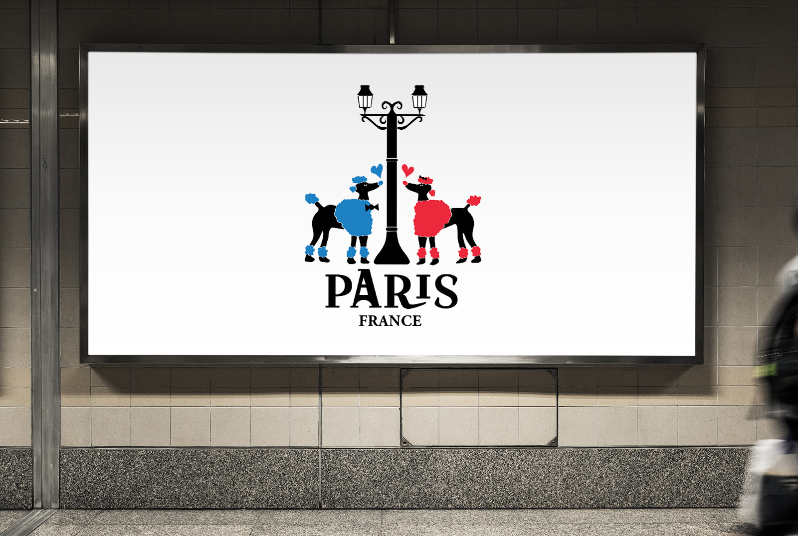
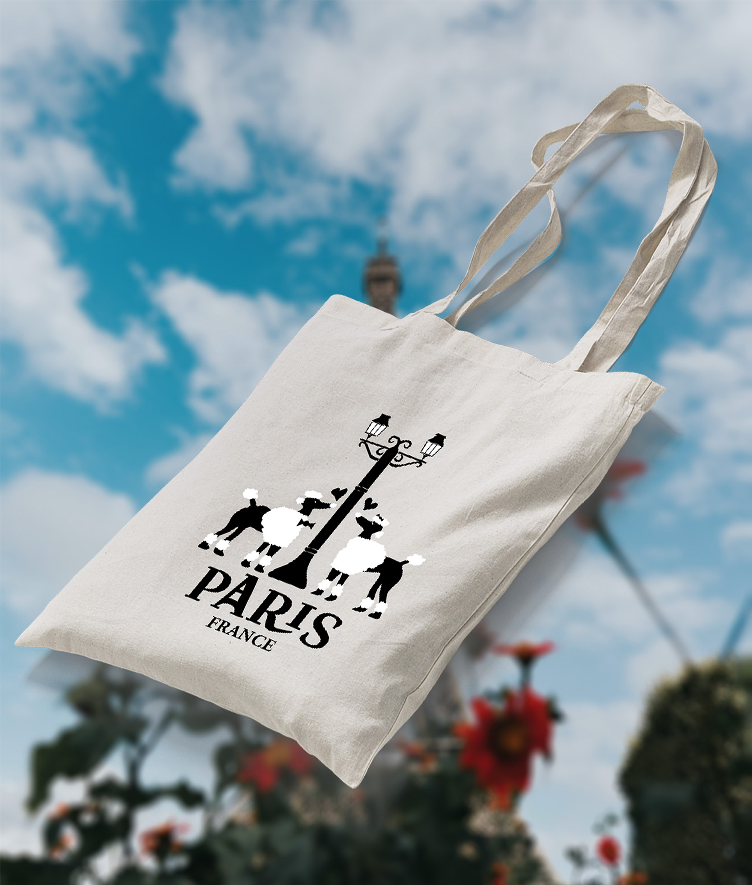
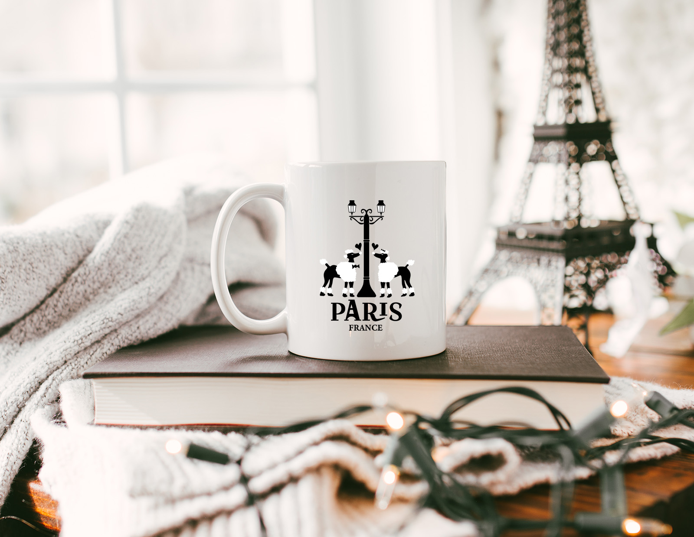
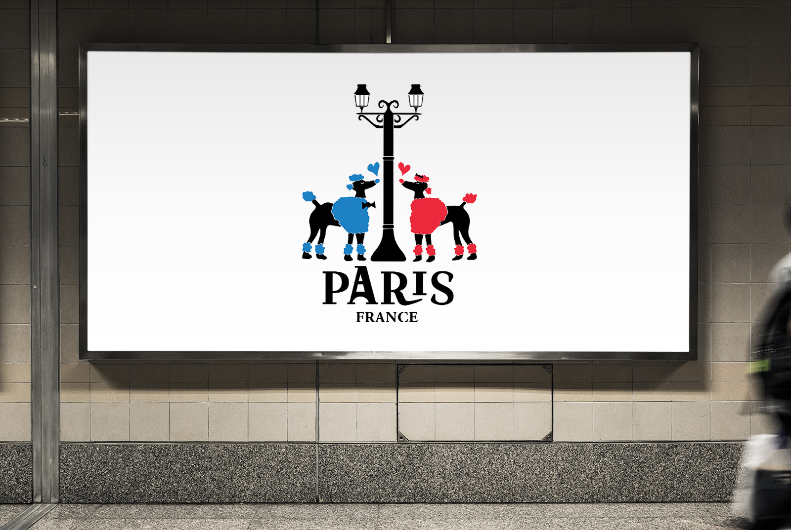

Amongst all the wonderful things Paris is known for from it's art to it's cuisine, fashion, museums, monumunents and historical sites, it was my duty to capture the essence of Paris in it's simplist form and what the city is most known for: Love.
 





Making a list of the many things Paris is known for and sketching them out in various different ways I can think of and finding that one sketch that stands out. Then finding the right font and stroke that fits.
Through the process of elimination I was able to weed out and seperate the strong sketches, from the weak sketches and from that I was able to visually combine two of my strongest components that tell a story through my final logo.